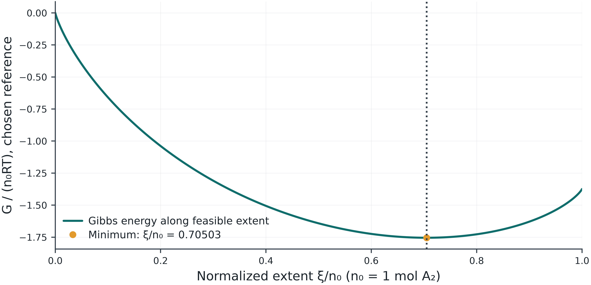

After midterm · Session 5 of 6 · 180 minutes
30 September 2026
Why can composition change while the equilibrium constant stays the same?
Before class: 3-page reading · 15–20 minutes
Bring the three preparation answers. Revisit your prediction after one controlled comparison and an independent check.
| Activity | Minutes |
|---|---|
| Opening question and essential concepts | 30 |
| One hand calculation | 20 |
| One lab demonstration | 20 |
| Break | 10 |
| Student pair investigation | 70 |
| Discussion, exit ticket and feedback | 30 |
The 70-minute investigation is student work. Final block: discussion 20 min, exit ticket 5 min, feedback 3 min, closing 2 min.
n_i=n_{i,0}+\nu_i\xi,\qquad n_i\geq0 \left(\frac{dG}{d\xi}\right)_{T,P}=\Delta_rG=\Delta_rG^\circ+RT\ln Q
Write the feasible extent interval first. A negative derivative favors increasing extent; a positive derivative favors decreasing extent.
An interior equilibrium has zero derivative. Boundary minima need one-sided checks.
\Delta_rG=0\ \Rightarrow\ Q=K,\qquad\ln K=-\frac{\Delta_rG^\circ}{RT}
Obtain standard Gibbs energy from direct data, formation properties, or H−TS at the evaluation temperature.
K depends on T and the reaction/standard-state convention. Q describes the current composition and pressure.
Additional K(T) routes are in the appendix and lab.
Lab 12 synthetic A₂ ⇌ 2A at 350 K uses ΔrG°=−4.000 kJ/mol.
\ln K=\frac{4000}{R(350)}=1.37454,\qquad K\approx3.95326
With ΔrH°=50.000 kJ/mol and ΔrS°=54000/350 J mol⁻¹ K⁻¹, the H−TS route gives the same value.

At ξ≈0.70503 mol, Q≈3.95326=K. Check the atom balance.
Use the synthetic Lab 12 case. Write nA₂=1−ξ, nA=2ξ and 0≤ξ≤1 mol first. Compare the supplied Gibbs-energy and H−TS routes, then change only pressure and inspect K and extent.
Keep one saved baseline for the pair investigation.
In Lab 12, compare the supplied Gibbs-energy and H−TS routes at the reference temperature. Change pressure at fixed T and compare K with equilibrium extent. Check one balance.
Why can composition change while the equilibrium constant stays the same?
Compare results and discuss unexpected behavior. Use one numerical check to support your explanation.
In Lab 12, compare the supplied Gibbs-energy and H−TS routes at the reference temperature. Change pressure at fixed T and compare K with equilibrium extent. Check one balance.
Assessment 5 and independent checkpoint
Retain one study JSON, one comparison and a short explanation.
Optional: Session appendix.
5 min · Explain and check
Answer the session question in the form. Give one result or independent check from today’s lab, with units.
3 min · Help improve the next class
Rate the pace, report lab access, and suggest one improvement.
Thai or English. No name, ID or email requested.
Wait for “Response received.” We will use the final 2 minutes to close the class.